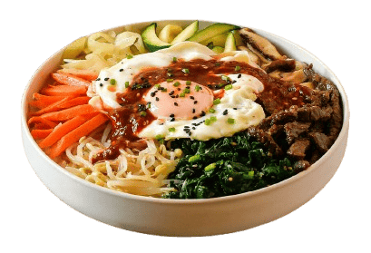
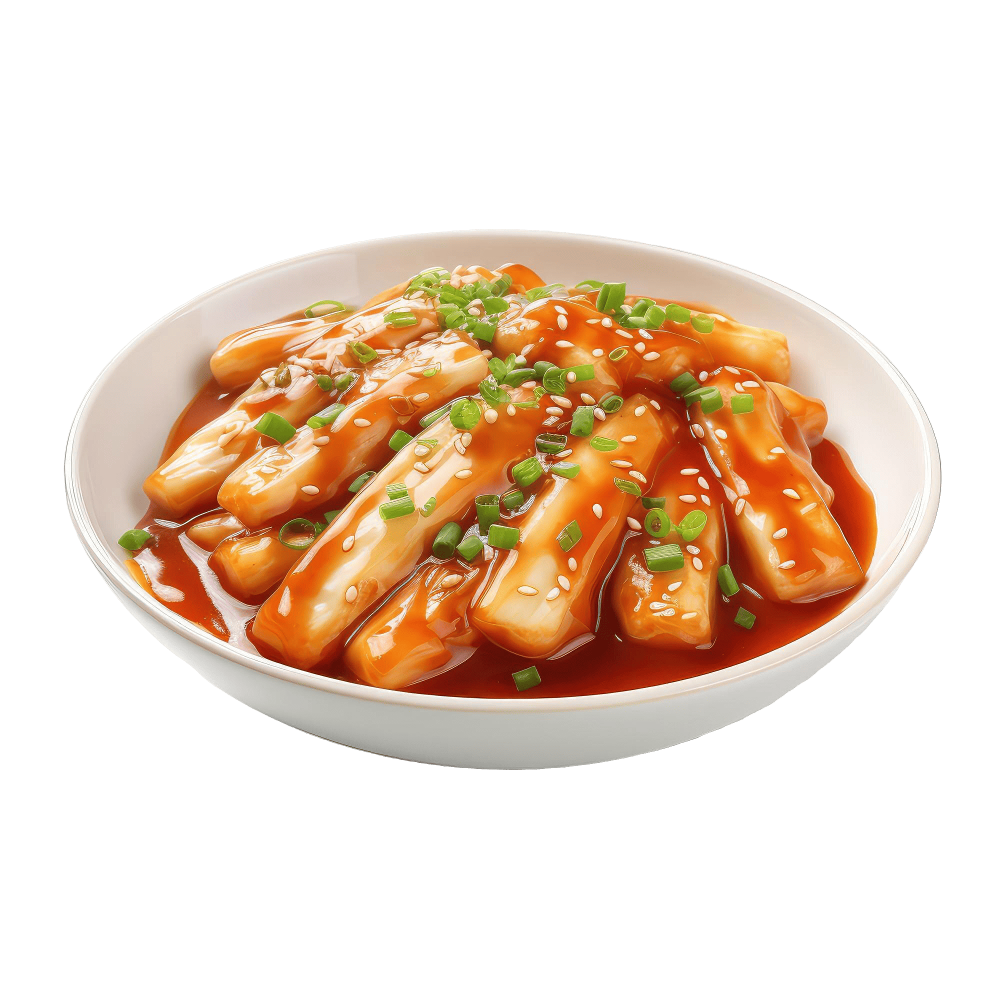
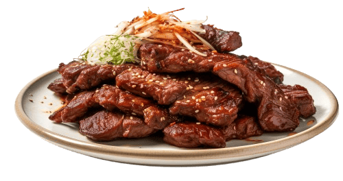

Platos Tipicos
La gastronomía coreana es famosa por su equilibrio de sabores, ingredientes frescos y presentaciones
coloridas.
Cada plato tiene una historia única y refleja la identidad cultural del país, desde comidas fermentadas con
siglos de tradición hasta recetas callejeras que han conquistado el mundo.
Los platos coreanos combinan el dulce, salado, picante y umami, creando una experiencia gastronómica
inigualable. Además, los ingredientes como el gochujang (pasta de ají rojo), el ajo y el sésamo son
esenciales
en muchas recetas.
A continuación, te presentamos algunos de los platillos más icónicos de Corea del Sur. ¡Descubre su
historia y sabor!
Kimchi (김치)
El Kimchi es el plato más representativo de Corea del Sur y un elemento esencial en cualquier comida
coreana. Se trata de col china o rábanos fermentados con una mezcla de chile rojo, ajo, jengibre y
otros
condimentos, lo que le da su característico sabor picante y ácido.
Esta receta tiene más de 3,000 años de historia y ha evolucionado en cientos de variantes según la
región
y los ingredientes utilizados. Además de su increíble sabor, el Kimchi es conocido por sus beneficios
para la salud, ya que es rico en probióticos, vitaminas y antioxidantes.
Dato curioso: En Corea, hacer Kimchi en familia es una tradición conocida como "Kimjang", reconocida como Patrimonio Cultural Inmaterial de la Humanidad por la UNESCO.
.png)
Bibimbap (비빔밥)
El Bibimbap, cuyo nombre significa "arroz mezclado", es uno de los platos más populares y coloridos de la gastronomía coreana se compone de un bol de arroz blanco acompañado de una variedad de vegetales frescos y salteados, carne (generalmente ternera), huevo y gochujang (pasta de ají rojo picante). Este platillo es conocido por su equilibrio de sabores y texturas, combinando lo dulce, salado, ácido y picante en cada bocado, tradicionalmente, se sirve con los ingredientes dispuestos en capas y se mezcla justo antes de comerlo, permitiendo que cada ingrediente aporte su propio sabor.
Dato curioso: El Bibimbap era originalmente una comida servida a la realeza y, con el tiempo, se convirtió en un plato cotidiano para los coreanos debido a su simplicidad y valor nutricional.

Tteokbokki (떡볶이)
El Tteokbokki es un popular platillo callejero coreano hecho con pasteles de arroz cilíndricos cocidos en una salsa picante y dulce a base de gochujang (pasta de ají rojo). Se suele acompañar con huevo, pescado en láminas (eomuk) o queso derretido.
Dato curioso: Originalmente, era un plato de la realeza, pero hoy es uno de los snacks más consumidos en Corea del Sur.

Bulgogi (불고기)
El Bulgogi es un plato coreano tradicional hecho con finas tiras de carne de res marinadas en una mezcla dulce y salada de salsa de soja, ajo, azúcar, sésamo y pera coreana, luego asadas a la parrilla o salteadas. Su nombre significa "carne de fuego", ya que tradicionalmente se cocina a la parrilla. Es uno de los platos coreanos más populares en todo el mundo por su sabor jugoso y su preparación sencilla.
Dato curioso: En Corea, el Bulgogi se suele disfrutar en reuniones familiares o en restaurantes de barbacoa, acompañado de arroz y banchan (acompañamientos).
